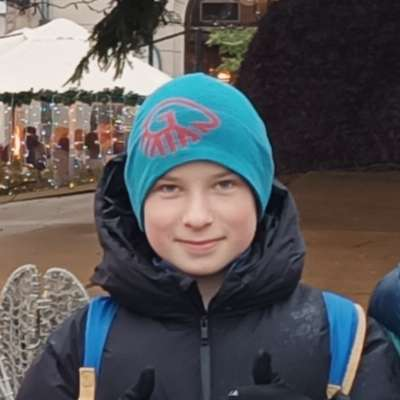

Najszybszy, najbardziej elastyczny launcher Minecraft. Żaden inny nie daje Ci takiej wolności wyboru wersji i modów.

Zobacz, jakie udogodnienia otrzymujesz – rzeczy, których próżno szukać u konkurencji.
Od kultowej 1.0 po najświeższą 1.21.11 – każda wersja dostępna jednym kliknięciem. Automatyczne pobieranie, instalacja i optymalizacja.
wszystkie wersje 1.0–1.21.11Instaluj, aktualizuj i zarządzaj modami z poziomu launcher'a. Kompatybilność z Forge, Fabric, Quilt i wieloma API.
Inteligentne przydzielanie pamięci, czyszczenie cache i optymalizacja argumentów Javy – gra działa płynniej niż kiedykolwiek.
Obserwuj ulubione serwery, ping, liczbę graczy i dołączaj bez wpisywania adresu – wszystko w jednym miejscu.
Twórz profile dla różnych wersji, paczek modów lub ustawień – idealne dla twórców contentu i testerów.
Kod launcher'a jest jawny, regularnie audytowany. Zero reklam, złośliwego oprogramowania i ukrytych opłat.
Nie wierzysz? Sprawdź sam, co oferujemy, a czego brakuje innym.
Nie ważne, czy chcesz powspominać stare czasy, czy grać w najnowszej wersji – Szatkoś Launcher to jedyne narzędzie, którego potrzebujesz.
Wszystkie wersje są pobierane z oficjalnych źródeł i weryfikowane.
Dołącz do tysięcy zadowolonych graczy. Pobierz Szatkoś Launcher i odkryj wolność, jaką daje dostęp do każdej wersji gry.
Wersja: 0.0.2 (wydanie stabilne) | 27 lutego 2026